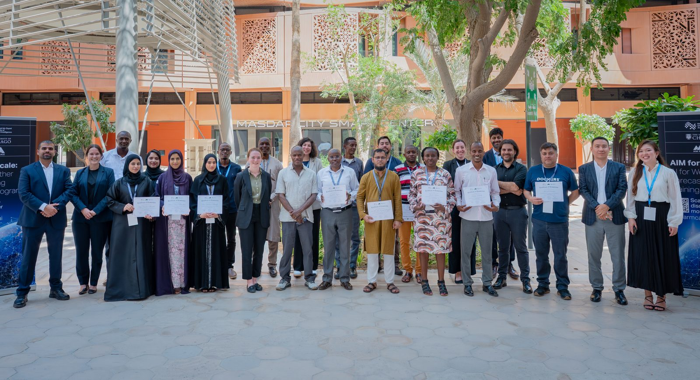

Led by MBZUAI · in collaboration with


 With collaborating institutions
With collaborating institutions


A non-profit training program helping meteorologists and agricultural specialists generate their own AI-based forecasts — tailored to farmers, and built to run in data-limited settings.
A capacity-building program under the AIM for Scale Weather Innovation Package — led by MBZUAI with the University of Chicago's AI for Climate initiative and partners. It helps meteorological services and ministries of agriculture in low- and middle-income countries generate their own AI-driven forecasts: localized, context-aware, and built for real decisions like when to plant, irrigate, and harvest.
Adapting AI models to local conditions — prioritizing rainfall, temperature, and extremes at the 1–10 day lead times farmers can act on.
This program: a structured curriculum enabling national services to generate and interpret AI forecasts using their own data.
Research on probabilistic and subseasonal-to-seasonal forecasting, and generalizing models across regions.
Twenty meteorologists and agricultural specialists from six countries, trained across the full AI-forecasting workflow in September 2025 — highlights, outcomes, and photos.

Hands-on tutorials with AIFS, FuXi and GraphCast — benchmarking, localization, and downscaling to your region.
Turning variables and thresholds into recommendations, and communication channels for extension services.
Connecting forecasts to early-warning systems and drafting a shared concept of operations.
Every participant works through a self-paced series before the workshop.
Ongoing research, milestones, and publications.
The full 5-day schedule across MBZUAI and NCM.
Organizers, speakers, and partner collaborators.
Venue, travel, weather, and what to pack.
The curriculum and the Pre-Training Portal.